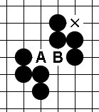
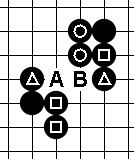
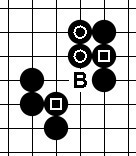

关于多重禁手的判断
#1 关于多重禁手的判断 作者：失落刀 发表时间：2009-8-22 21:03:15

图一
问题X点是否是三三禁手？要判断X点是否是三三禁手需要先判断A、B两点是否是禁手。
1、A点是否是禁手？

图二
当A点有黑子后我们来看下棋形。首先斜线的活四是没问题的，A点与竖线的方块是活三也是没问题的。问题再于A点与横线的三角是否是活三？这关系到A点有子后黑棋四三三禁手是否成立。从本图可以判断，横线的活三不成立，因为B点是三三禁手点，黑无法着于B点，因此横线的活三不成立。
因此A点不是禁手。
2、B点是否是禁手？

图三
B点的禁手判断很简单，圆圈和方块的两个活三都成立。
因此B点是禁手。
3、X点是否是禁手？
上面图二、三的结论，A不是禁手，B点是禁手。
回到图一，因为A点不是禁手，所以A点黑棋是可以下的，黑棋X点的三三禁手成立。
#2 Re:关于多重禁手的判断 作者：花瀑葬 发表时间：2010-6-2 13:45:12
说的太好了，细悟中